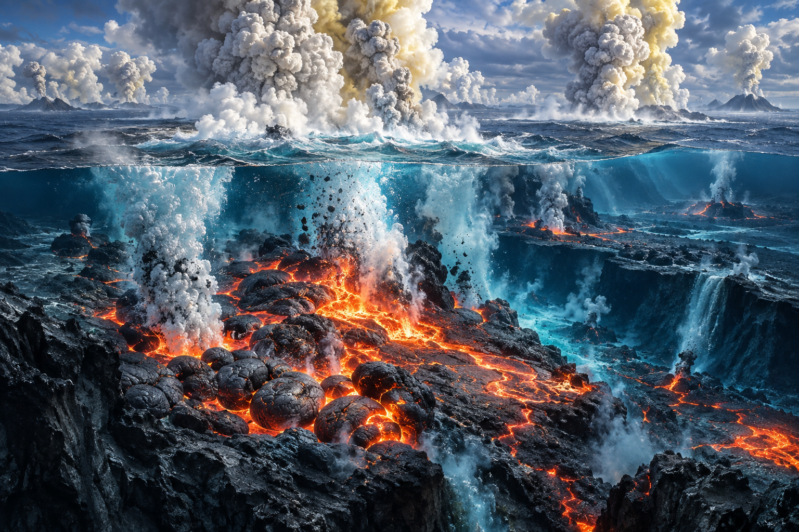
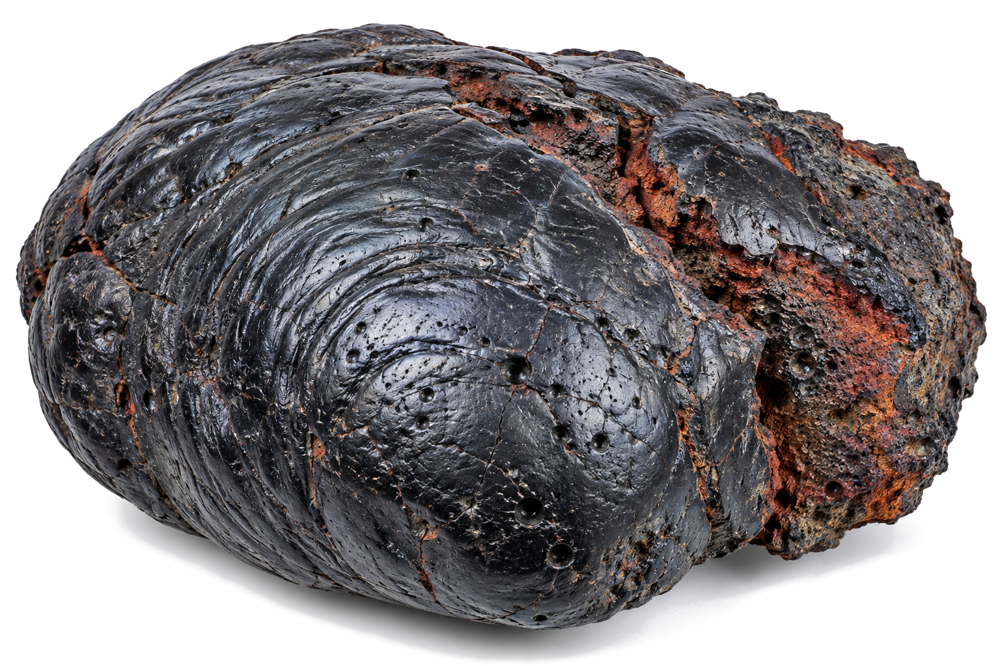
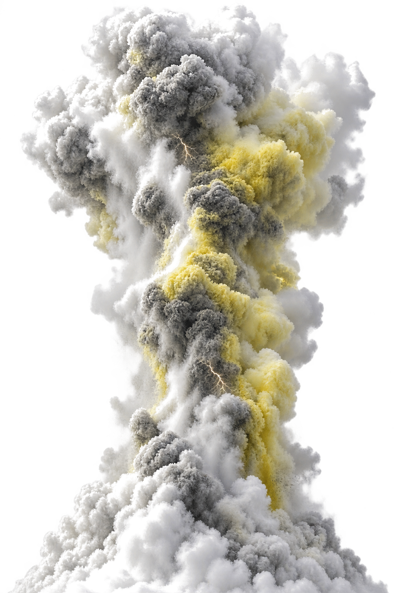
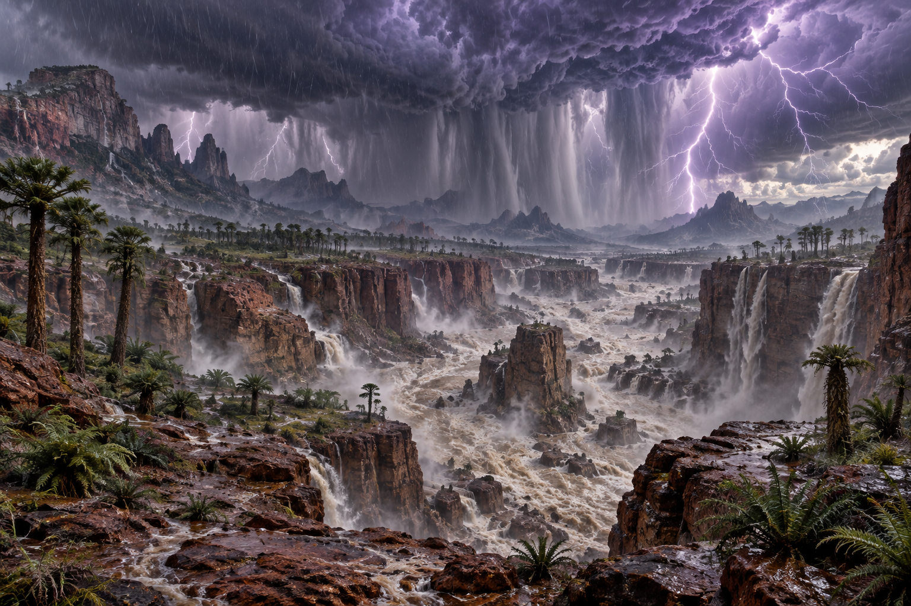
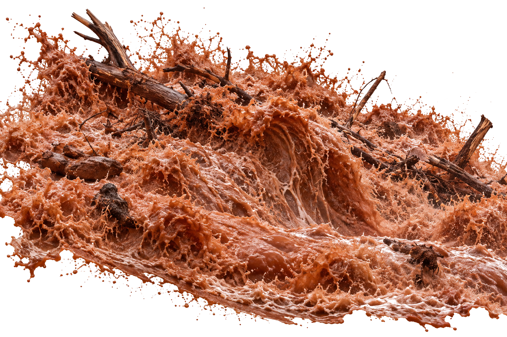
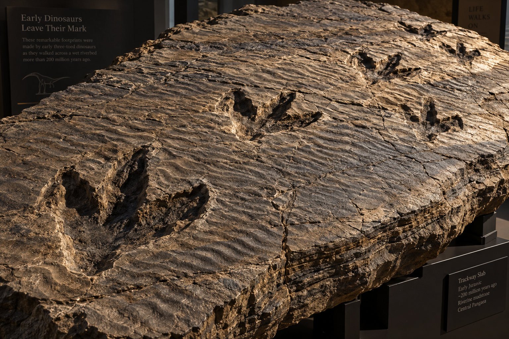
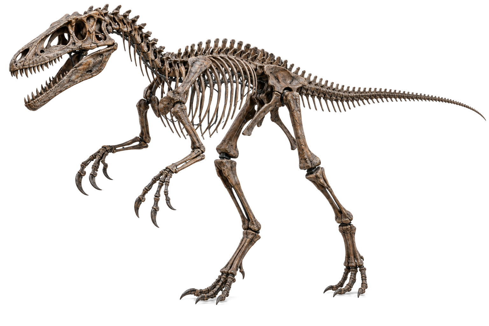

// PANTHALASSA OCEANIC PLATE // WRANGELLIA LIP // 233.50 MA
DOSSIER #03 // SUBMARINE FLOOD BASALT
CO2 SPIKE
WRANGELLIA ERUPTION · OCEANIC EVAPORATION



LAVA VOLUME: 1,000,000 KM³ SUBMARINE BASALT
PLANETARY STEAM COOKER
Oceans Boiling!
Until flood basalts ruptured the sea floor, boiling oceans into vapor.
GREENHOUSE DISCHARGE & EVAPORATION LOG
SUBMARINE VOLCANIC PROVINCE: WRANGELLIA FLOOD BASALT
CO2 EMISSION ESTIMATE: 40,000 GIGATONS
ATMOSPHERIC HUMIDITY INCREASE: +400% GLOBAL AIR SATURATION
THERMAL EVAPORATION RATE: PLANETARY SUPER-EVAPORATOR
BOILING SEA
BASALT DISCHARGE1M KM³ PILLOW LAVA
ATMOSPHERIC CO22,500 PPM SPIKE
AIR SATURATION98% HUMIDITY
THE CLOUDBURST // 2,000,000 YEARS
// HYDROSPHERE: SUPERSATURATED ATMOSPHERE ➔ GLOBAL DELUGE
CARNIAN PLUVIAL INJECTION // -233.0 MA
// ATMOSPHERE MONITOR // GLOBAL PRECIPITATION SHOCK // 2,000,000 YEARS
DOSSIER #03 // CARNIAN PLUVIAL EVENT
2M YRS
THE MEGA-MONSOON · UNCEASING GLOBAL DELUGE


STORM DURATION: TWO MILLION UNBROKEN YEARS
THE SKY NEVER DRIED
Endless Torrent!
Then the skies broke open, and it rained for two million years without stopping.
PALEO-HYDROLOGICAL DELUGE MATRIX
GLOBAL PRECIPITATION SHOCK: CARNIAN PLUVIAL EPISODE
AVERAGE RAINFALL SURGE: +600% OVER CONTINENTAL INTERIOR
SEDIMENTARY DEPOSITION: RED DESERT GRAVELS ➔ THICK COAL SWAMPS
STORM SYSTEM LONGEVITY: 2,000,000 CONTINUOUS YEARS
Unable to eat the tough new conifers, ancient reptile kings starved in the mud.
CARNIAN FAUNAL TURNOVER REPORT
HERBIVORE MORTALITY RATE: RHYNCHOSAURIA > 95% EXTINCT
CAUSE OF COLLAPSE: LOSS OF FERNS / INDIGESTIBLE RESIN CANOPY
MARINE REEF LOSS: 80% CALCAREOUS SPONGE BIOHERMS DISSOLVED
ECOLOGICAL VACANCY: PLANETARY NICHE WIPED OPEN FOR DINOSAURS
STARVED
RHYNCHOSAURS> 95% WIPED OUT
DESERT FLORA0% SURVIVAL
ECOLOGICAL NICHE100% VACANT
THE DINOSAUR EXPLOSION // 5% TO 90%
// ADAPTIVE RADIATION: BIPEDAL PREDATORS ➔ GLOBAL DOMINANCE
DAWN OF DINOSAURS // THE CROWNING MOMENT // -232.0 MA
// TRIASSIC HORIZON // 232.00 MA // DINOSAUR DIVERSIFICATION EXPLOSION
EXTINCTION ARCHIVE // RESOLUTION DOSSIER
90% DINO
THE ADAPTIVE RADIANCE · DINOSAURS TAKE THE EARTH


ADAPTATION: BIPEDAL AGILITY / DIVERSIFIED TEETH
5% ➔ 90% BIOMASS TAKEOVER
The Empire Began!
From the mud, early dinosaurs seized the planet—ruling for 160 million years.
DINOSAUR RADIATION INDEX LOG
PRE-DELUGE POPULATION: < 5% TOTAL TERRESTRIAL TETRAPODS
POST-DELUGE POPULATION: > 90% GLOBAL VERTEBRATE DOMINANCE
LINEAGE DIVERSIFICATION: SAUROPODOMORPHS, THEROPODS, ORNITHISCHIANS
REIGN LONGEVITY: 165,000,000 CONSECUTIVE YEARS OF DOMINANCE
CROWNED
PRE-STORM< 5% BIOMASS
POST-STORM> 90% DOMINANCE
DYNASTY SPAN165M YEARS
// THE EXTINCTION ARCHIVES: DOSSIER #03
THE CARNIAN PLUVIAL EVENT: THE 2-MILLION-YEAR RAINSTORM
Two million years of unceasing rain completely remade planet Earth. The deluge wiped out ancient desert rulers, drowned continents in lush conifer swamps, and gave rise to the most dominant creatures in planetary history: The Dinosaurs.
2M YRSContinuous Rain
95%Rhyncho Die-off
90%Dino Domination
GEOLOGICALTRIASSICRECORD #03
AGE OF DINOSAURS
DOSSIER // PT-234
234.00 MA · ARID PANGEA DESERT233.50 MA · WRANGELLIA SUPER-VOLCANO233.00 MA · THE 2-MILLION-YEAR DELUGE232.80 MA · THE AMBER SPIKE & CONIFERS232.50 MA · THE CARNIAN REPTILE COLLAPSE232.00 MA · DAWN OF THE DINOSAUR EMPIRE231.80 MA · GEOLOGICAL DOSSIER RESOLVED